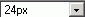

Die Schriftgröße kann im Dropdown-Menü der Toolbar eingestellt
werden. Die Größeneinstellung kann den markierten Text oder den
Text nach der Auswahl beeinträchtigen. Die vordefinierte Textgröße
ist 14 Pixel. Die Textgröße ist vergleichbar mit anderen Textverarbeitungsprogrammen
wie z.B.: Microsoft Word, OpenOffice.
Die gerade benutzte Textgröße wird im Dropdown-Menü automatisch angezeigt. Um verwendete Textgrößen zu sehen, brauchen Sie nur den gewünschten Text zu markieren, danach erscheint die aktuelle Größe im Dropdown-Menü. Wenn Sie in einem Text mehr als eine Schriftgröße verwenden wird im Dropdownmenu keine Schriftgröße angezeigt.
Wenn Sie den Text in einer einheitlichen Schriftgröße anzeigen möchten, markieren Sie diesen und wählen im Dropdown-Menü die gewünschte Schriftgröße.